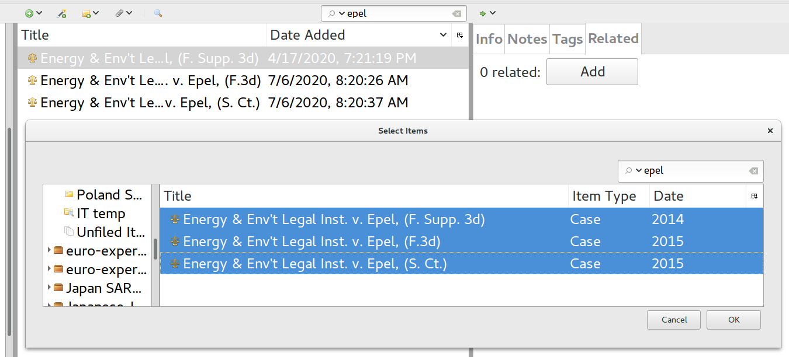
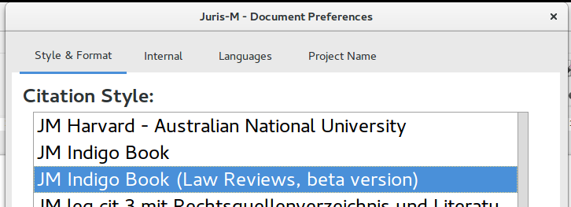
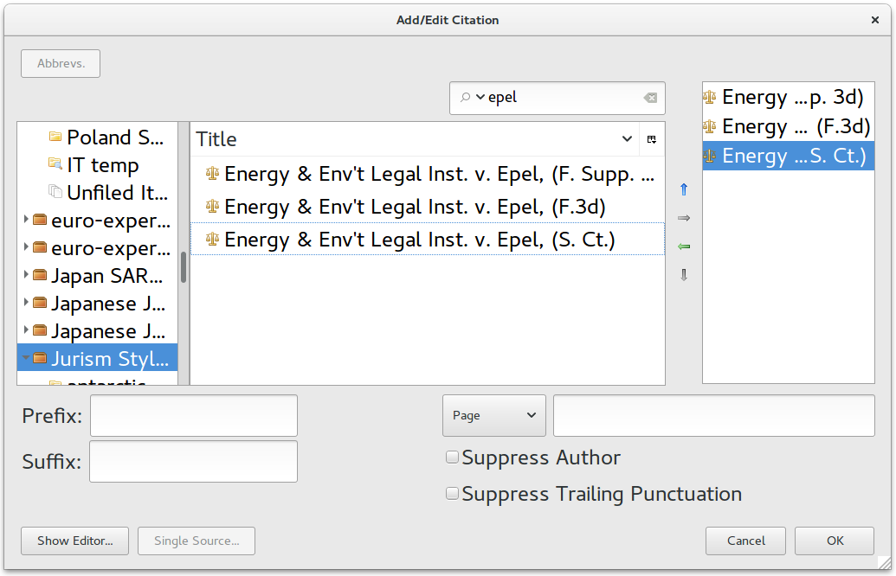
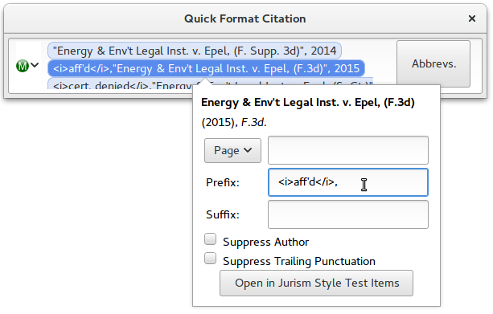
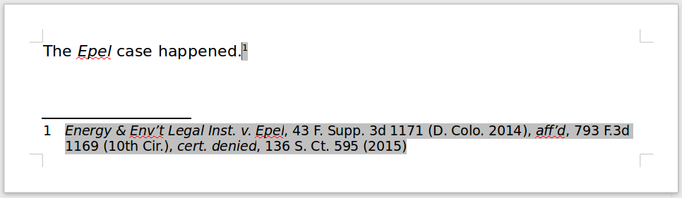

Parallel cites in Jurism: the user side
Parallel cites in Jurism: the user side
“Parallel” citations are common in the law. Court judgments are important everywhere, as they provide the most precise indicator of how courts (are likely to) apply the law to particular sets of facts; and as such, they receive an inordinate amount of attention. This in turn often leads to “combined” or “parallel” citation patterns that provide the reader with more context than a single reference would do. These patterns vary among legal systems, but there appear to be three types overall: truly parallel cites to multiple reports of the same case; procedural histories; and citation of commentaries that interpret a given judgment. In the wild, they look something like this:
- Multiple reports
- Harden v. Playboy Enterprises, Inc., 261 Ill. App. 3d 443, 633 N.E.2d 764 (1993).
- Procedural histories
- Energy & Env’t Legal Inst. v. Epel, 43 F. Supp. 3d 1171 (D. Colo. 2014), aff’d, 793 F.3d 1169 (10th Cir.), cert. denied, 136 S. Ct. 595 (2015).
- Related commentaries
- Cass. 1ere civ., March 28, 2000, JCP G, 2000, 10296, J. Sainte-Rose; D, 2000, somm. p. 358, Ph. Delebecque, p. 900, S. Piedelievre.
As the underlining in the above examples illustrates, each of these citations is built from multiple items. The first is an amalgam of two references to the same Illinois case, in separate reporters. The second is a series of three separate cites to a US Federal trial judgment, and the result of two appeals. The third is a single cite to a French case, followed by two commentaries published in the same journal.
In each of the three examples, the series is made more compact and readable by omitting redundant information—for instance, in the first example, the case name and the year of the judgment are given only once, and the court (the Illinois Court of Appeals) is not stated in the final parenthetical, because it is implicit in the first-listed reporter (Ill. App. 3d).
The rules for collapsing cites into a compact series are not specified anywhere, but roughly speaking they are that:
-
leading elements should appear only on the first cite, unless their content differs from their predecessor;
-
trailing elements should appear only on the last cite unless their successor value differs; and
-
if a trailing value (such as a court name) is implicit from any cite content that gets printed, it should be omitted as well.
Jurism applies these rules automatically. Citation “collapsing” occurs when a Jurism citation (a) contains cites to multiple items, and (b) the cites are related. With those two tweaks in place, it should Just Work.[1]
- Related items
- Item relations are set in Jurism itself (not in the document). In addition to providing a hint for the formatting of citations, this provides a permanent record of the connections among resources as a references in future projects. To set a relation, select an item in the center panel, and click on its Related tab. Clicking on the Add button will open the relations popup. Use search or navigation to select the items to be related to this one, and click OK.

The related items will appear under the Related tab. Clicking one will navigate to the target item.

Relations only need to be set once, they are a permanent record, and
will sync to other machines or accounts via jurism.org. Citing the items together
in a multiple citation will create a parallel citation automatically.
- Selecting an Indigo Book style
- Parallel citation collapsing works with all of the “JM” styles in Jurism, but in this example we will select the JM Indigo Book (law reviews) style in our document.

- Multiple items in a citation
- There are two alternatives for inserting citations into a document. The default is the “ribbon” popup, shown below. To insert multiple citations, simply search again and select another. Here we chose the three items making up the “Epel” example above.

The other option is the “Classic” dialog, accessible by clicking on the Jurism icon to the left of the ribbon insert box. The Classic dialog allows navigation within the library in addition to search:[2]

- Signal prefixes
- The “Epel” example is a procedural history, which requires signals to indicate the significance of each subsequent case in the series. These are not added automatically, so we need to add them by hand, with appropriate formatting markup. Below, we add the “aff’d” signal, italicized with its trailing comma:

… and that’s it. Our footnote citation is inserted with the appropriate elements suppressed, and will update correctly for context as we proceed to edit the document:

If you follow the steps explained here, and a citation series does not collapse correctly, the best way to report the fault is via the Jurism-enhanced Indigo Book. Click on the Propose Cite Example button, log in with a (free) GitHub account, enter the citation as it should appear, add an explanatory comment on your example, and click Save. We can take it from there. ↩︎
To open the view shown below, click on the Multiple sources button that shows in the lower-left corner of the popup when it opens. ↩︎